This vignette walks through the composite elements in SeqPlotR using
toy GRanges data. Each section builds a small synthetic
dataset and renders the element via the
seq_plot() %+% seq_track() %+% <element>
pipeline.
Coordinate conventions
SeqPlotR automatically selects the x-axis unit from the narrowest window in each track:
| Narrowest window width | Displayed unit | scale_factor |
|---|---|---|
| ≥ 1 Mb (1,000,000 bp) | Mb | 1e-6 |
| ≥ 100 bp | kb | 1e-3 |
| < 100 bp | bp | 1 |
All windows in a track share the same unit so axis break intervals
are consistent across panels. Override per-track with
seq_track(window_scale = ...), or per-window by setting
mcols(windows)$scale directly (highest priority). The
examples below use 2 Mb windows, which auto-infer the Mb unit.
library(SeqPlotR)
#>
#> Attaching package: 'SeqPlotR'
#> The following object is masked from 'package:base':
#>
#> %||%
library(GenomicRanges)
#> Loading required package: stats4
#> Loading required package: BiocGenerics
#> Loading required package: generics
#>
#> Attaching package: 'generics'
#> The following objects are masked from 'package:base':
#>
#> as.difftime, as.factor, as.ordered, intersect, is.element, setdiff,
#> setequal, union
#>
#> Attaching package: 'BiocGenerics'
#> The following objects are masked from 'package:stats':
#>
#> IQR, mad, sd, var, xtabs
#> The following objects are masked from 'package:base':
#>
#> anyDuplicated, aperm, append, as.data.frame, basename, cbind,
#> colnames, dirname, do.call, duplicated, eval, evalq, Filter, Find,
#> get, grep, grepl, is.unsorted, lapply, Map, mapply, match, mget,
#> order, paste, pmax, pmax.int, pmin, pmin.int, Position, rank,
#> rbind, Reduce, rownames, sapply, saveRDS, table, tapply, unique,
#> unsplit, which.max, which.min
#> Loading required package: S4Vectors
#>
#> Attaching package: 'S4Vectors'
#> The following object is masked from 'package:utils':
#>
#> findMatches
#> The following objects are masked from 'package:base':
#>
#> expand.grid, I, unname
#> Loading required package: IRanges
#> Loading required package: Seqinfo
# A single 2-Mb window on chr1 → axis labels read as 1.0, 1.5, 2.0 Mb.
win <- GRanges("chr1", IRanges(1e6, 3e6))Tracks, windows, and margins
Every track is allocated a rectangular cell in the page layout and partitioned into five nested zones, two at the track level and three at the window level:
-
Track outer margin — outermost band on the track
cell. Axis titles (taken from the track
mapping) are drawn here.seq_track(track_outer_margin = ...). Default0.02. -
Track inner margin — separates the title band from
the window row.
seq_track(track_inner_margin = ...). Default0.02. -
Window outer margin — per-window spacer inside the
track plot region.
seq_track(window_outer_margin = ...). Default0. -
Window inner margin — per-window band holding axis
lines, ticks, and tick labels.
seq_track(window_inner_margin = ...). Default0.02. -
Plot area — what remains per window. Elements
render here;
panel$innercarries these coordinates.
Axis lines sit at the boundary between the plot area and the window
inner margin. The gap between adjacent windows is the plot- or
track-level aes("window.gap.width" = ...) (default
0.01); the gap between tracks is the plot-level
trackGaps (default 0.01). The old
seq_track(window_margin = ...) constructor argument is
deprecated — see Window gap width below.
The schematic below lays out two tracks × two windows using nothing
but SeqPlotR, with each zone coloured via the plot-level
trackBackground, trackInnerBackground,
windowBoxBackground, windowInnerBackground,
and windowBackground aesthetics. seq_text
places a label in each plot area.
# Two windows (2 Mb and 1.5 Mb wide).
schematic_win <- GRanges(
"chr1", IRanges(start = c(1e6, 5e6), end = c(3e6, 6.5e6)))
# One label centred inside each window for each track.
mk_labels <- function(track_name) {
GRanges(
"chr1", IRanges(start = c(2e6, 5.75e6), width = 1),
label = paste0(track_name, "\nWindow ", c(1, 2))
)
}
lbl_A <- mk_labels("Track A")
lbl_B <- mk_labels("Track B")
# Zone colors via plot-level aesthetics; axes turned off so the five
# nested rectangles are visible without interference.
schematic_aes <- aes(
trackBackground = "#F89A8A", # track outer margin
trackBorder = "grey30",
trackInnerBackground = "#ECCB60", # track inner margin
trackInnerBorder = "grey30",
windowBoxBackground = "#A699D0", # window outer margin
windowBoxBorder = "grey30",
windowInnerBackground = "#BEC97E", # window inner margin
windowInnerBorder = "grey30",
windowBackground = "#92BFDB", # plot area
windowBorder = "grey30",
xAxisLine = FALSE, xAxisTicks = FALSE, xAxisLabels = FALSE,
xAxisTitle = FALSE,
yAxisLine = FALSE, yAxisTicks = FALSE, yAxisLabels = FALSE,
yAxisTitle = FALSE,
trackGaps = 0.04,
"window.gap.width" = 0.03
)
seq_plot(aesthetics = schematic_aes) %|%
seq_track(track_id = "A",
data = lbl_A,
mapping = map(x = start, label = label),
windows = schematic_win,
track_outer_margin = 0.035,
track_inner_margin = 0.025,
window_outer_margin = 0.025,
window_inner_margin = 0.035) %+%
seq_text(aesthetics = aes(fontsize = 12, color = "#1C1B1A")) %__%
seq_track(track_id = "B",
data = lbl_B,
mapping = map(x = start, label = label),
windows = schematic_win,
track_outer_margin = 0.035,
track_inner_margin = 0.025,
window_outer_margin = 0.025,
window_inner_margin = 0.035) %+%
seq_text(aesthetics = aes(fontsize = 12, color = "#1C1B1A")) -> p
p$plot()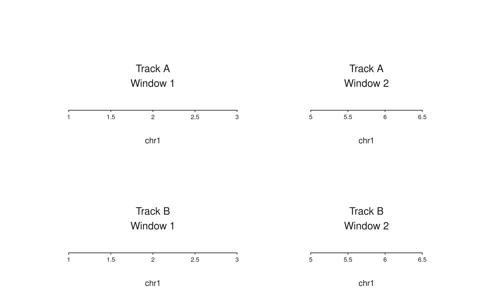
Reading the schematic, from outside to inside on each track:
- Pink — track outer margin (axis titles live here).
- Yellow — track inner margin.
- Purple — window outer margin (per-window spacer).
- Green — window inner margin (axis lines, ticks, tick labels live here).
- Blue — plot area, where elements render.
- The vertical green/blue split inside a track is the window margin between the two windows.
- The horizontal gap between the two tracks is the track gap.
The next chunk shows the same layout with real elements and axes on.
Axis titles appear in the track outer margin, pulling their text
directly from the track mapping (the x title is
start, the y titles are score and
impact).
trkA_gr <- GRanges("chr1",
IRanges(start = c(1.2e6, 1.8e6, 2.4e6, 5.2e6, 5.7e6, 6.2e6), width = 1e5),
score = c(0.3, 0.7, 0.5, 0.6, 0.4, 0.8))
trkB_gr <- GRanges("chr1",
IRanges(start = c(1.3e6, 2.0e6, 2.7e6, 5.3e6, 5.9e6, 6.3e6), width = 1),
impact = c(0.5, 0.9, 0.4, 0.7, 0.3, 0.6))
real_aes <- aes(
trackBackground = "#FCEBEA",
trackInnerBackground = "#FAF5DC",
"window.gap.width" = 0.02
)
seq_plot(aesthetics = real_aes) %|%
seq_track(track_id = "Track A",
data = trkA_gr,
mapping = map(x = start, y = score),
windows = schematic_win,
track_outer_margin = 0.03,
window_inner_margin = 0.04) %+%
seq_bar(aesthetics = aes(fill = "#4385BE")) %__%
seq_track(track_id = "Track B",
data = trkB_gr,
mapping = map(x = start, y = impact),
windows = schematic_win,
track_outer_margin = 0.03,
window_inner_margin = 0.04) %+%
seq_lollipop(aesthetics = aes(color = "#AF3029", linewidth = 1.2)) -> p
p$plot()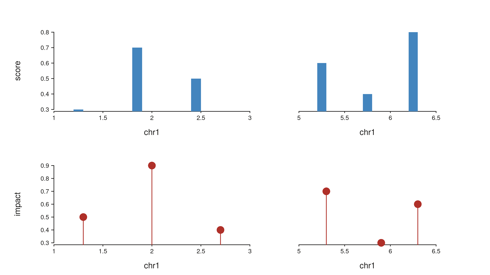
Window gap width
aes("window.gap.width" = <npc>) controls the
horizontal gap between adjacent windows within a track. Set it on
seq_plot() to apply across every track, or on a specific
seq_track() to override the plot-level value for that track
only. Default is 0.01.
gap_win <- GRanges(
"chr1",
IRanges(start = c(1, 1e6 + 1, 2e6 + 1), width = 1e6)
)
gap_lbl <- function(track_name) {
GRanges(
"chr1",
IRanges(start = c(5e5, 1.5e6, 2.5e6), width = 1),
label = paste0(track_name, "\nW", c(1, 2, 3))
)
}
# Three tracks, three gap widths: collapsed, default, generous.
seq_plot(aesthetics = aes(
windowBackground = "#92BFDB", windowBorder = "grey30",
xAxisLine = FALSE, xAxisTicks = FALSE, xAxisLabels = FALSE,
xAxisTitle = FALSE, yAxisLine = FALSE, yAxisTicks = FALSE,
yAxisLabels = FALSE, yAxisTitle = FALSE,
"window.gap.width" = 0 # plot-level default for all tracks
)) %|%
seq_track(track_id = "Collapsed (0)",
data = gap_lbl("Collapsed"),
mapping = map(x = start, label = label),
windows = gap_win) %+%
seq_text(aesthetics = aes(fontsize = 11)) %__%
seq_track(track_id = "Default (0.01)",
data = gap_lbl("Default"),
mapping = map(x = start, label = label),
windows = gap_win,
aesthetics = aes("window.gap.width" = 0.01)) %+%
seq_text(aesthetics = aes(fontsize = 11)) %__%
seq_track(track_id = "Generous (0.05)",
data = gap_lbl("Generous"),
mapping = map(x = start, label = label),
windows = gap_win,
aesthetics = aes("window.gap.width" = 0.05)) %+%
seq_text(aesthetics = aes(fontsize = 11)) -> p
p$plot()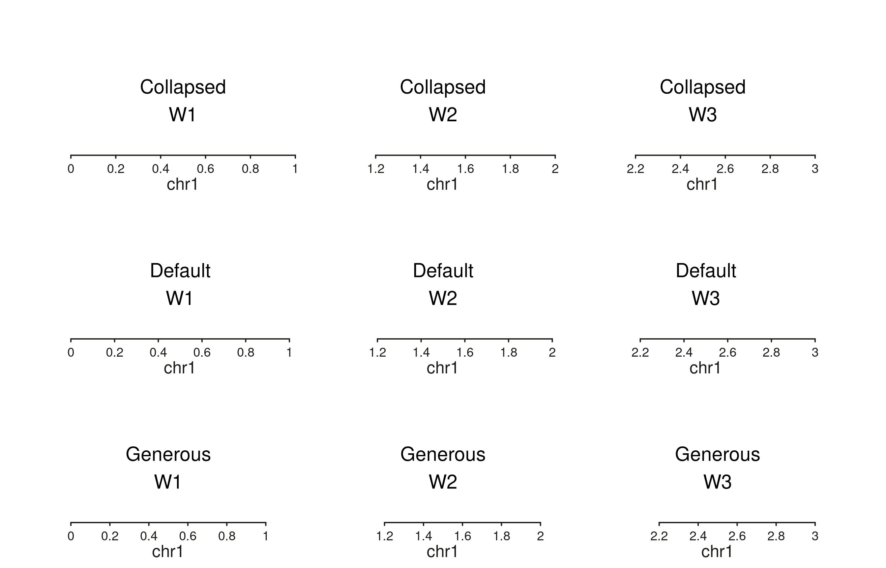
The legacy seq_track(window_margin = ...) constructor
argument is deprecated and emits a warning when used; switch to
aes("window.gap.width" = ...). The older
aes(window_gaps = ...) key still works as an alias but
window.gap.width takes priority when both are set.
Margin recipes
The five zones are independent knobs. The examples below share a single small dataset and vary only the margin arguments so the effect of each one is visible.
recipe_win <- GRanges("chr1", IRanges(1e6, 3e6))
recipe_gr <- GRanges(
"chr1",
IRanges(start = seq(1.1e6, 2.9e6, by = 2e5), width = 8e4),
score = runif(10, 0.2, 1.0)
)Minimal: drop the axis titles and the track outer margin — the plot fills the full track cell.
seq_plot(aesthetics = aes(xAxisTitle = FALSE, yAxisTitle = FALSE)) %|%
seq_track(data = recipe_gr,
mapping = map(x = start, y = score),
windows = recipe_win,
track_outer_margin = 0,
window_inner_margin = 0.02) %+%
seq_bar(aesthetics = aes(fill = "#4385BE")) -> p
p$plot()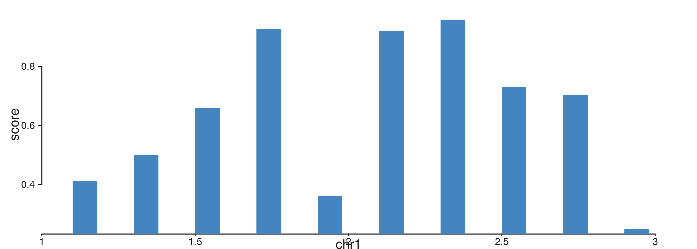
Room for titles and labels: widen both track and
window margins. The axis titles (start, score)
auto-populate from the mapping.
seq_plot() %|%
seq_track(data = recipe_gr,
mapping = map(x = start, y = score),
windows = recipe_win,
track_outer_margin = c(0.05, 0.05, 0.02, 0.02),
window_inner_margin = 0.06) %+%
seq_bar(aesthetics = aes(fill = "#4385BE")) -> p
p$plot()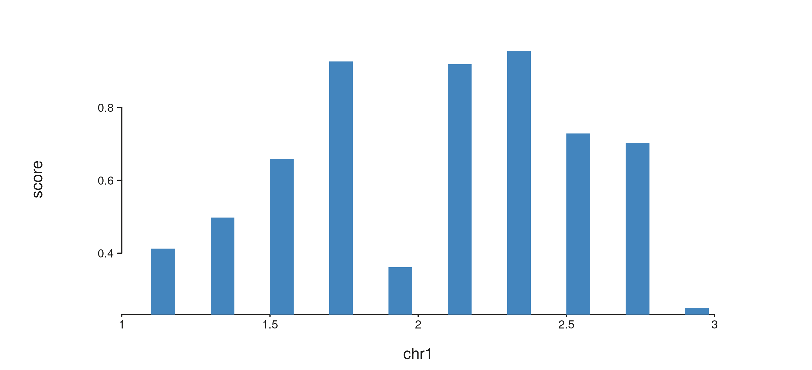
Asymmetric margins: the length-4 form uses base-R
par(mar = c(bottom, left, top, right)) order. Below the
x-axis title gets a wider bottom band; the top edge stays flush.
seq_plot() %|%
seq_track(data = recipe_gr,
mapping = map(x = start, y = score),
windows = recipe_win,
track_outer_margin = c(0.06, 0.06, 0, 0),
track_inner_margin = 0.015,
window_inner_margin = 0.04) %+%
seq_bar(aesthetics = aes(fill = "#4385BE")) -> p
p$plot()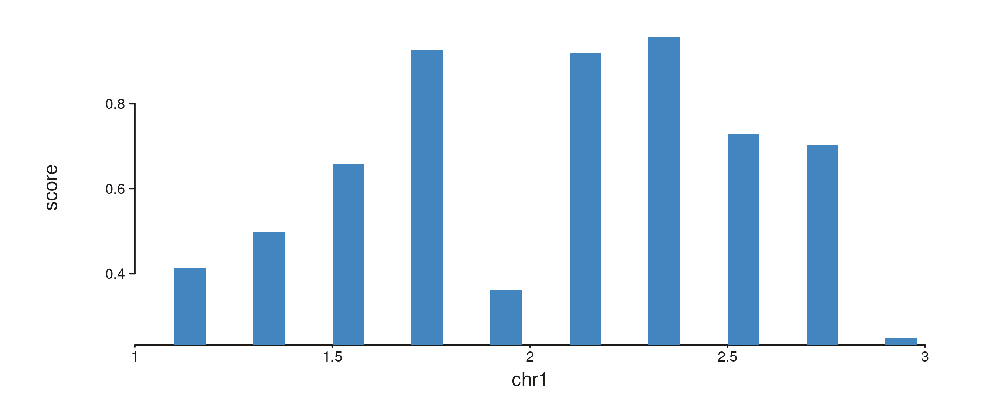
Window inner vs window outer margin: turn on
windowBoxBackground and windowInnerBackground
to see the two per-window bands. The window outer margin (purple) is an
optional spacer; the window inner margin (green) is where ticks and
labels sit.
seq_plot(aesthetics = aes(
windowBoxBackground = "#C4B9E0",
windowInnerBackground = "#BEC97E"
)) %|%
seq_track(data = recipe_gr,
mapping = map(x = start, y = score),
windows = recipe_win,
track_outer_margin = 0.03,
track_inner_margin = 0.01,
window_outer_margin = 0.02,
window_inner_margin = 0.05) %+%
seq_bar(aesthetics = aes(fill = "#4385BE")) -> p
p$plot()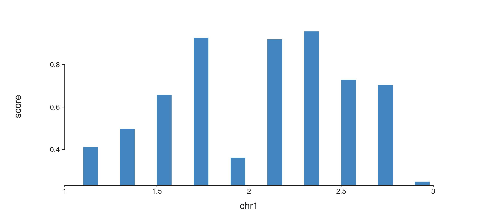
Track and window sizing
Relative sizing is controlled by three arguments:
track_width (within a row), track_height
(across rows), and the scale mcols column on the
windows GRanges (within a track’s plot region).
Unequal track widths on one row. Track A is 3× wider than B.
win_small <- GRanges("chr1", IRanges(1e6, 3e6))
gr_small <- GRanges("chr1",
IRanges(start = seq(1.1e6, 2.9e6, by = 2e5), width = 8e4),
score = runif(10, 0.2, 1.0))
seq_plot() %|%
seq_track(track_id = "A",
data = gr_small,
mapping = map(x = start, y = score),
windows = win_small,
track_width = 3) %+%
seq_bar(aesthetics = aes(fill = "#4385BE")) %|%
seq_track(track_id = "B",
data = gr_small,
mapping = map(x = start, y = score),
windows = win_small,
track_width = 1) %+%
seq_lollipop(aesthetics = aes(color = "#AF3029")) -> p
p$plot()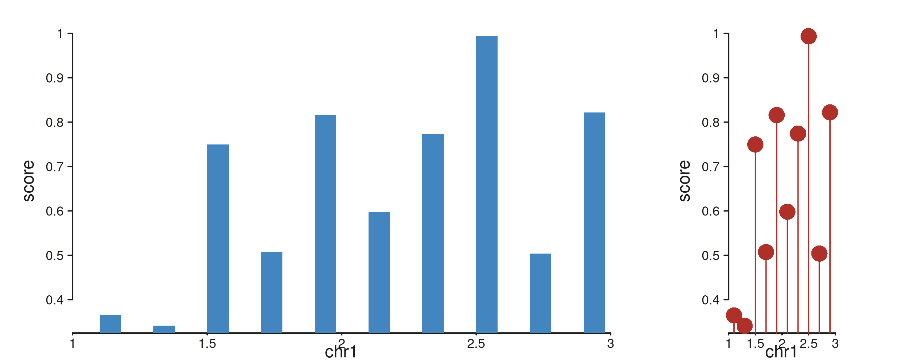
Unequal track heights on stacked rows. A points track twice as tall as the bar track below it.
xs_sig <- seq(1.05e6, 2.95e6, length.out = 40)
sig_gr <- GRanges("chr1", IRanges(start = xs_sig, width = 1),
score = sin((xs_sig - 1e6) / 3e5) * 0.4 + 0.5)
seq_plot() %|%
seq_track(track_id = "Signal",
data = sig_gr,
mapping = map(x = start, y = score),
windows = win_small,
track_height = 2) %+%
seq_line(aesthetics = aes(color = "#4385BE", linewidth = 1.5)) %__%
seq_track(track_id = "Bars",
data = gr_small,
mapping = map(x = start, y = score),
windows = win_small,
track_height = 1) %+%
seq_bar(aesthetics = aes(fill = "#8B7EC8")) -> p
p$plot()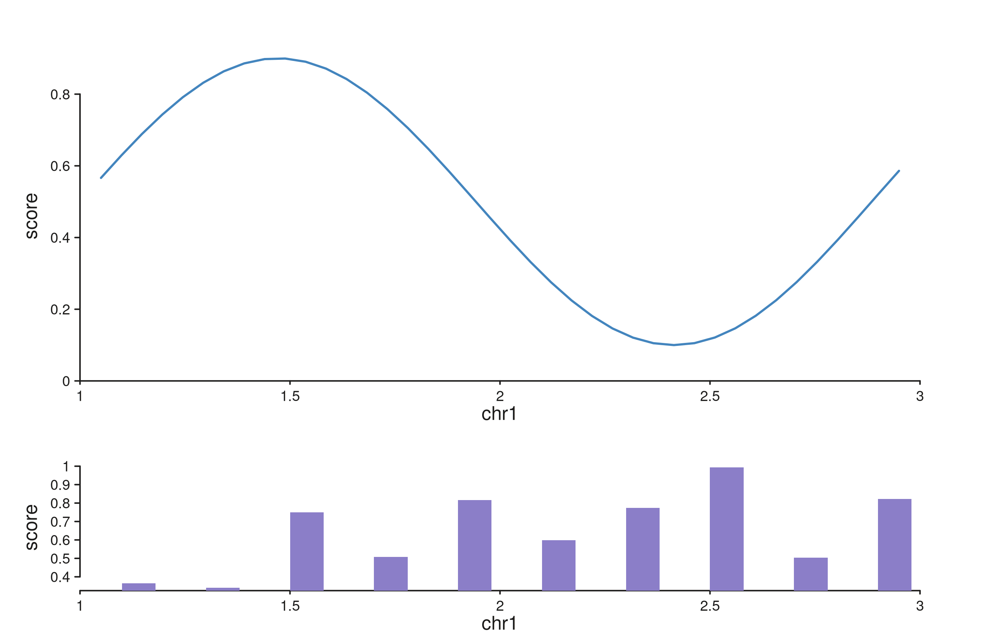
Per-window scale factor. Within a multi-window
track, windows are sized by
width(windows) * mcols(windows)$scale. Defaults to the
auto-inferred scale for all windows. Setting one window’s scale to
0 shrinks it to nothing; setting distinct scales compresses
or expands individual windows relative to others.
# Two windows of equal genomic width, but the second rendered at
# 2× the first's relative width.
scaled_win <- GRanges(
"chr1", IRanges(start = c(1e6, 5e6), end = c(3e6, 7e6)))
S4Vectors::mcols(scaled_win)$scale <- c(1e-6, 2e-6)
scaled_gr <- GRanges("chr1",
IRanges(start = c(seq(1.2e6, 2.8e6, length.out = 5),
seq(5.2e6, 6.8e6, length.out = 5)),
width = 1e5),
score = runif(10, 0.2, 1.0))
seq_plot() %|%
seq_track(data = scaled_gr,
mapping = map(x = start, y = score),
windows = scaled_win) %+%
seq_bar(aesthetics = aes(fill = "#4385BE")) -> p
p$plot()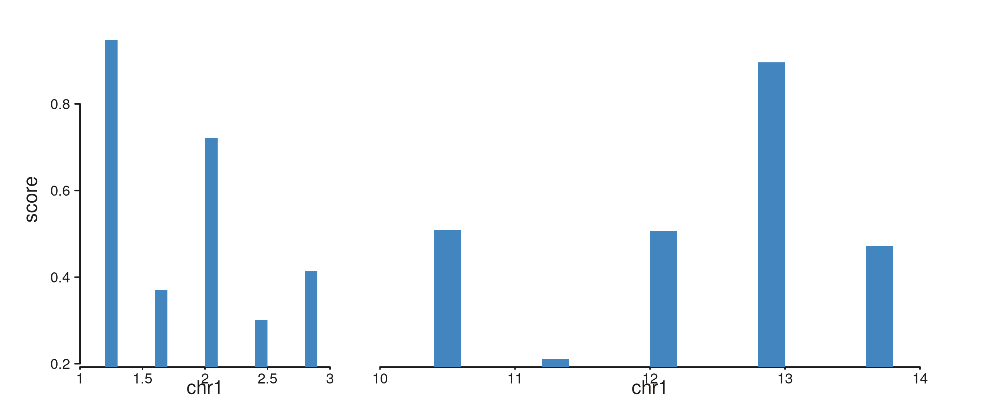
Track-level unit override with
window_scale. Pass window_scale on
seq_track to force a fixed scale factor for all windows, or
a positional vector to set each window independently.
window_scale overrides the auto-inferred unit but is
overridden by any mcols(windows)$scale already present.
Length-1 applies to all windows; any other mismatched length triggers a
warning and recycles.
# Two 5 Mb windows — auto-inference gives Mb, but we force kb.
mb_win <- GRanges("chr1", IRanges(start = c(1e6, 1e7 + 1), width = 5e6))
mb_gr <- GRanges("chr1",
IRanges(start = c(seq(1.2e6, 5.8e6, length.out = 5),
seq(1.02e7, 1.58e7, length.out = 5)),
width = 2e5),
score = runif(10, 0.2, 1.0))
seq_plot() %|%
seq_track(data = mb_gr,
mapping = map(x = start, y = score),
windows = mb_win,
window_scale = 1e-3) %+%
seq_bar(aesthetics = aes(fill = "#4385BE")) -> p
p$plot()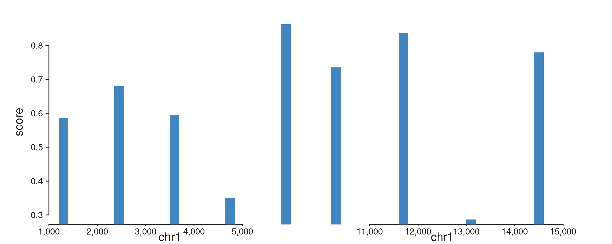
seq_bar — simple bars
One filled rectangle per interval. With no group
mapping, each bar’s height is its mapped y value.
bar_gr <- GRanges(
"chr1",
IRanges(start = seq(1.1e6, 2.9e6, by = 2e5), width = 8e4),
score = runif(10, 0.2, 1.0)
)
seq_plot() %|%
seq_track(data = bar_gr,
mapping = map(x = start, y = score),
windows = win) %+%
seq_bar() -> p
p$plot()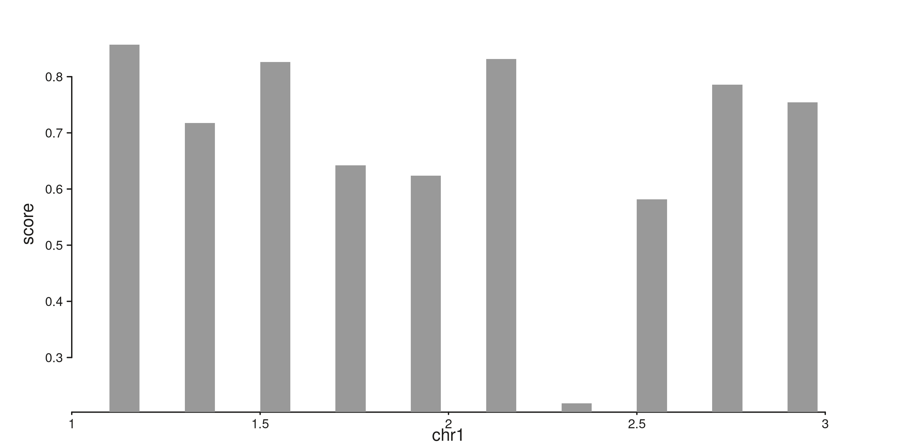
Stacked bars
Supplying a group mapping causes bars at identical x
positions to stack. Colors are drawn from the Flexoki palette keyed on
group level.
stack_gr <- GRanges(
"chr1",
IRanges(start = rep(seq(1.2e6, 2.8e6, by = 2e5), each = 3), width = 5e4),
value = runif(27, 0.1, 0.5),
category = rep(c("A", "B", "C"), times = 9)
)
seq_plot() %|%
seq_track(data = stack_gr,
mapping = map(x = start, y = value, group = category),
windows = win) %+%
seq_bar() -> p
p$plot()
#> 8 out-of-bounds data points excluded! (seq_bar)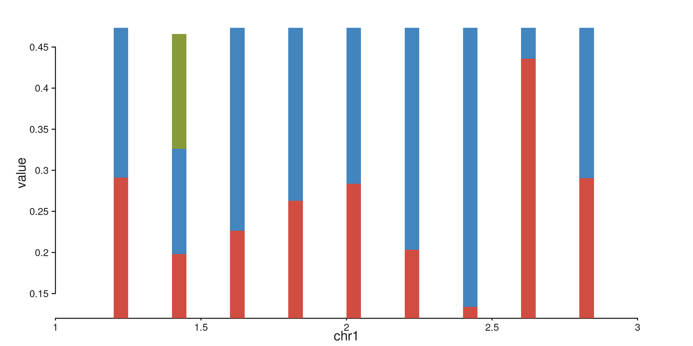
seq_ribbon — filled band between two y series
Requires y_min and y_max mappings. Useful
for confidence bands.
xs <- seq(1.05e6, 2.95e6, length.out = 50)
mu <- sin((xs - 1e6) / 3e5) * 0.3 + 0.5
band <- 0.15
ribbon_gr <- GRanges(
"chr1", IRanges(start = xs, width = 1),
mean = mu,
lo = mu - band,
hi = mu + band
)
seq_plot() %|%
seq_track(data = ribbon_gr,
mapping = map(x = start, y_min = lo, y_max = hi),
windows = win) %+%
seq_ribbon(aesthetics = aes(fill = "#4385BE", alpha = 0.5)) -> p
p$plot()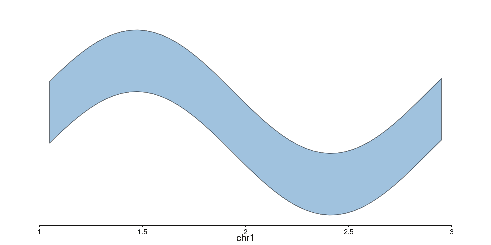
seq_density — kernel density estimate
Computes stats::density() on the mapped y
and renders the distribution as a filled area. The density evaluation
axis runs horizontally, mapped through the track’s
yscale.
dens_gr <- GRanges(
"chr1", IRanges(start = seq(1e6, 3e6, length.out = 200), width = 1),
score = c(rnorm(120, mean = 0.3, sd = 0.05),
rnorm(80, mean = 0.7, sd = 0.08))
)
seq_plot() %|%
seq_track(data = dens_gr,
mapping = map(x = start, y = score),
windows = win) %+%
seq_density(aesthetics = aes(fill = "#879A39", alpha = 0.7)) -> p
p$plot()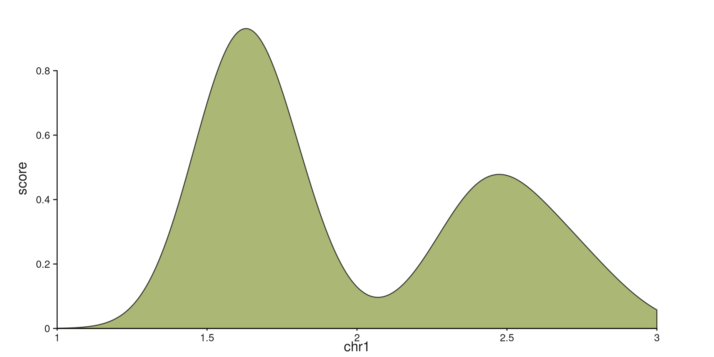
seq_tile — rectangles per interval
Unrotated (default): one rectangle per observation
tile_gr <- GRanges(
"chr1",
IRanges(start = seq(1.1e6, 2.9e6, by = 1e5), width = 8e4),
fill_col = sample(flexoki_palette(5), 19, replace = TRUE)
)
seq_plot() %|%
seq_track(data = tile_gr,
mapping = map(x = start, fill = fill_col),
windows = win) %+%
seq_tile(aesthetics = aes(rotate = FALSE)) -> p
p$plot()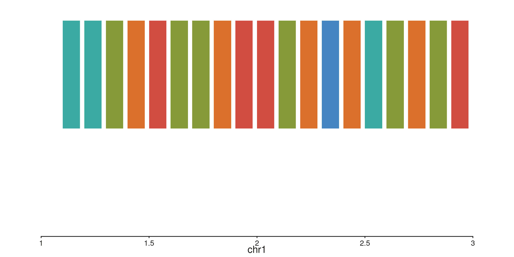
seq_lollipop — stem + point
Vertical stem from baseline (default 0) to
y, with a point at y. Good for sparse,
discrete events (e.g. mutation calls).
lp_gr <- GRanges(
"chr1",
IRanges(start = sample(seq(1.05e6, 2.95e6, by = 1e4), 15), width = 1),
impact = runif(15, 0.2, 1.0)
)
seq_plot() %|%
seq_track(data = lp_gr,
mapping = map(x = start, y = impact),
windows = win) %+%
seq_lollipop(aesthetics = aes(color = "#AF3029", linewidth = 1.2)) -> p
p$plot()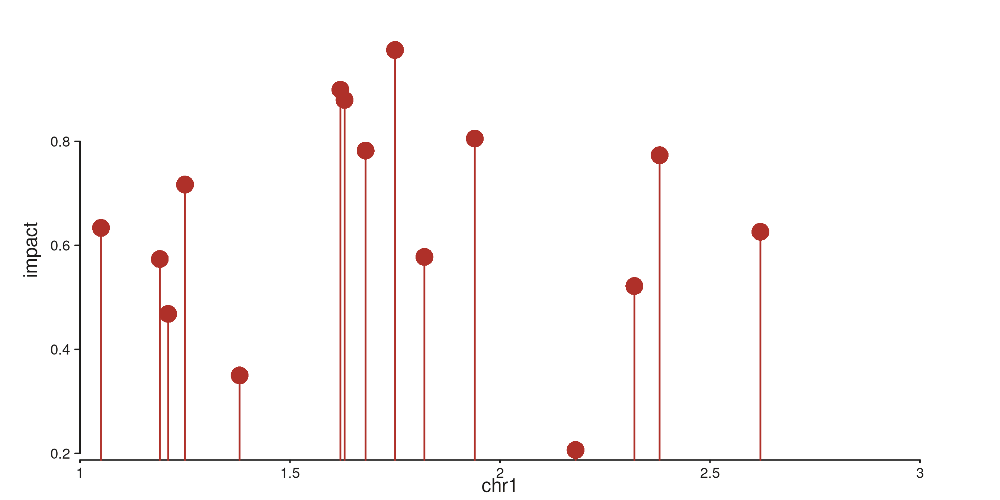
seq_gene — format-agnostic gene models
All column references come through map():
group joins features into one gene, strand
orients the arrows, type distinguishes exons from UTRs,
label places the gene name, and color tints
each gene.
gene_gr <- GRanges(
"chr1",
IRanges(
start = c(1.10e6, 1.20e6, 1.35e6, 1.50e6, 1.58e6,
1.90e6, 2.05e6, 2.18e6, 2.30e6,
2.55e6, 2.68e6, 2.80e6),
width = c( 3e4, 6e4, 4e4, 5e4, 2e4,
4e4, 8e4, 5e4, 3e4,
6e4, 3e4, 5e4)
),
gene_id = c("A","A","A","A","A",
"B","B","B","B",
"C","C","C"),
gene_name = c("TP53","TP53","TP53","TP53","TP53",
"MYC","MYC","MYC","MYC",
"BRCA1","BRCA1","BRCA1"),
strand_col = c("+","+","+","+","+",
"-","-","-","-",
"+","+","+"),
feature = c("UTR","exon","exon","exon","UTR",
"UTR","exon","exon","UTR",
"exon","exon","exon"),
color = c(rep("#205EA6", 5),
rep("#AF3029", 4),
rep("#66800B", 3))
)
seq_plot() %|%
seq_track(data = gene_gr,
mapping = map(group = gene_id,
type = feature,
strand = strand_col,
label = gene_name,
color = color),
windows = win) %+%
seq_gene(map(group = gene_id,
type = feature,
strand = strand_col,
label = gene_name,
color = color)) -> p
p$plot()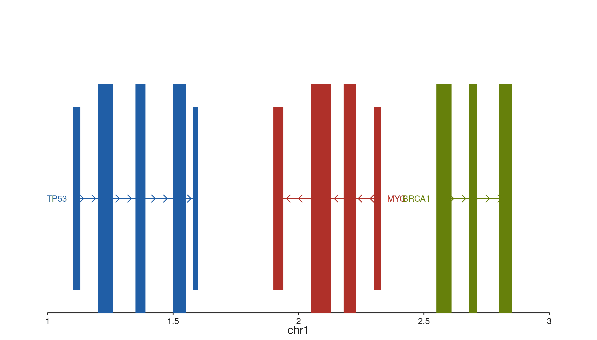
Multi-region windows
A single windows GRanges may contain several ranges.
Each window becomes its own panel within the same track, with relative
widths set by width(windows). The same mapping resolves
against every window independently, and per-panel x-scales reflect the
local coordinates.
multi_win <- GRanges(
"chr1",
IRanges(start = c(1.0e6, 5.0e6), end = c(3.0e6, 6.5e6))
)
starts_A <- seq(1.1e6, 2.9e6, length.out = 10) # 10 in window 1
starts_B <- seq(5.1e6, 6.4e6, length.out = 10) # 10 in window 2
multi_gr <- GRanges(
"chr1",
IRanges(start = c(starts_A, starts_B), width = 5e4),
score = runif(20, 0.2, 1.0),
region = rep(c("Region A", "Region B"), times = c(10, 10))
)
seq_plot() %|%
seq_track(data = multi_gr,
mapping = map(x = start, y = score, group = region),
windows = multi_win) %+%
seq_bar() -> p
p$plot()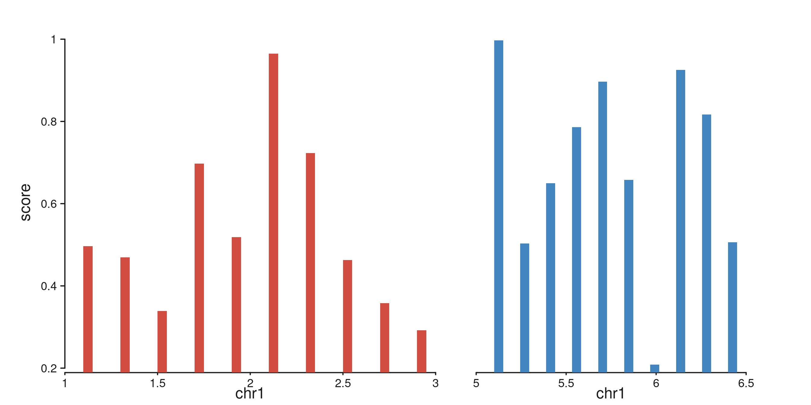
Flipping the axes: genomic on x vs. genomic on y
By default every seq_track runs genomic
x along its width and lets elements choose the y-axis scale
from their data. Pass scale_y = seq_scale_genomic(...) to
flip the track so genomic position runs along y
instead; then set scale_x = seq_scale_continuous(...) (or
seq_scale_discrete(...)) to carry a scalar / categorical
value on the x-axis. The same data can be rendered either way.
seq_track() exposes three arguments that drive this:
-
scale_x— controls the x-axis scale (defaults to the genomic range of the track’swindows). -
scale_y— controls the y-axis scale.seq_scale_genomic(...)auto-enablesuses_genomic_y. -
y_windows— shorthand to set a genomic y-range without constructing a scale object.
Same gene set, two orientations
A small gene-level table (log2fc per gene, one point per
gene):
gene_meta <- GRanges("chr1",
IRanges(start = seq(1.1e6, 2.9e6, length.out = 14), width = 1e4),
log2fc = c(-2.4, -1.3, 0.9, 2.1, 1.6, -0.5, 2.7,
0.4, -1.8, 1.2, 0.2, 0.8, -2.2, 1.1),
sig = c("down","down","ns","up","up","ns","up",
"ns","down","up","ns","ns","down","up"))
sig_cols <- c(up = "#AF3029", down = "#205EA6", ns = "#878580")Genomic x, scalar y (conventional).
x = start runs along the 1–3 Mb genomic window;
y = log2fc is scalar.
seq_plot() %|%
seq_track(data = gene_meta,
mapping = map(x = start, y = log2fc, color = sig),
windows = win) %+%
seq_segment(mapping = map(x = start, x_end = start,
y = 0, y_end = log2fc, color = sig),
aesthetics = aes(linewidth = 2)) %+%
seq_point(aesthetics = aes(size = 0.9)) -> p
p$plot()
#> 14 out-of-bounds data points excluded! (seq_point)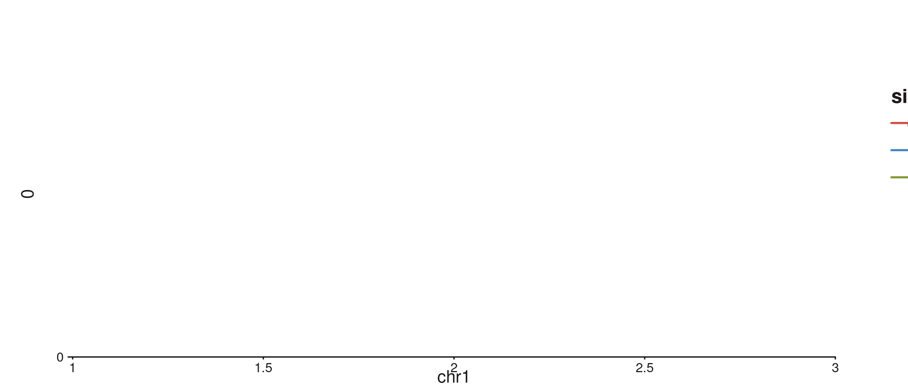
Scalar x, genomic y (flipped). scale_x
carries log2fc in [-3, 3];
scale_y = seq_scale_genomic(win) puts genomic position on
the vertical axis. The lollipops now fan out horizontally from
x = 0, with one row per gene at its true genomic
coordinate.
seq_plot() %|%
seq_track(data = gene_meta,
mapping = map(x = log2fc, y = mid, color = sig),
windows = win,
scale_x = seq_scale_continuous(limits = c(-3, 3)),
scale_y = seq_scale_genomic(win),
track_width = 0.6) %+%
seq_segment(mapping = map(x = 0, x_end = log2fc,
y = mid, y_end = mid, color = sig),
aesthetics = aes(linewidth = 2)) %+%
seq_point(aesthetics = aes(size = 0.9)) -> p
p$plot()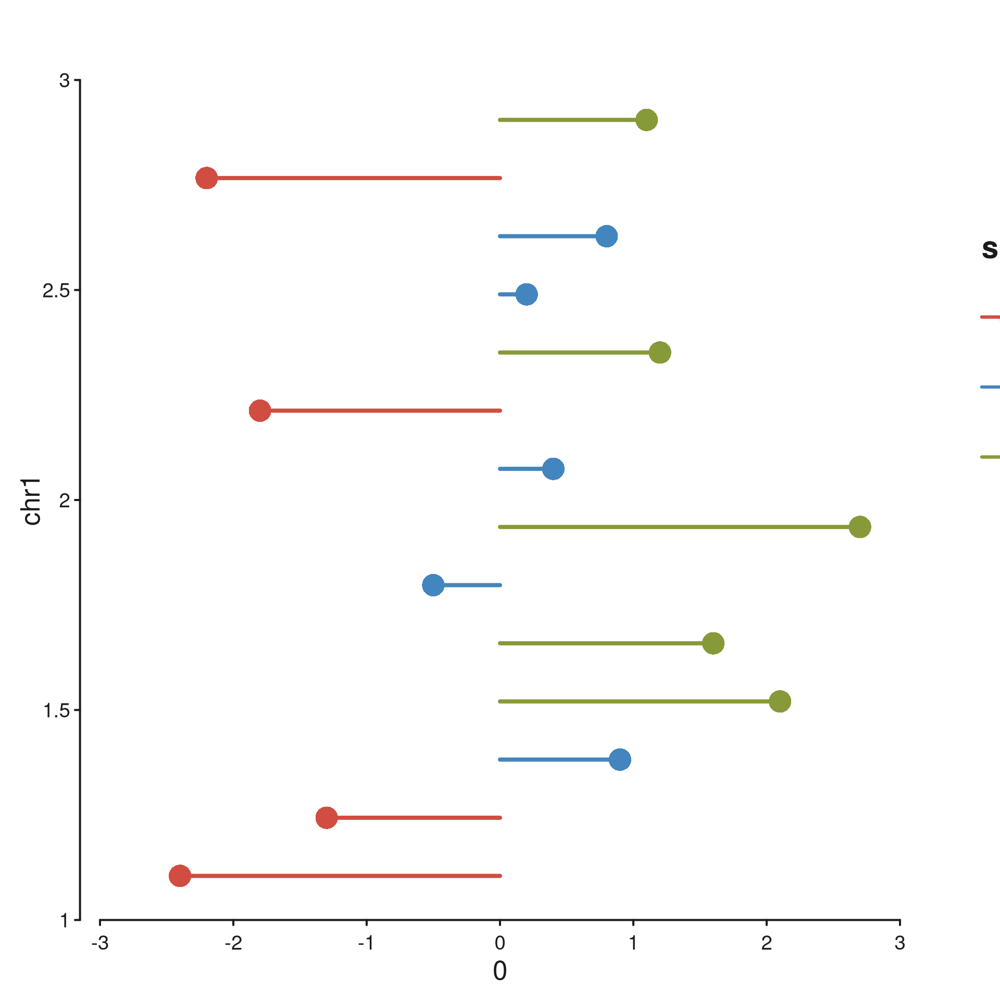
The two plots encode the same table — only the orientation of the
genomic axis changes. In the flipped version the y-tick labels fall back
to Mb units (the genomic yScaleFactor, matching the x-axis
default) so 1.5 Mb reads as 1.5 rather than
1,500,000.
Coverage signal flipped onto the y-axis
The same principle extends to continuous signal. Below, a coverage curve is shown first in the conventional orientation, then flipped so depth runs along x and genomic position along y — useful as a narrow sidebar next to a wider browser panel.
cov_xs <- seq(1.05e6, 2.95e6, length.out = 200)
cov_gr <- GRanges("chr1", IRanges(cov_xs, width = 1),
depth = 0.5 + 0.3 * sin((cov_xs - 1e6) / 3e5))
seq_plot() %|%
seq_track(data = cov_gr,
mapping = map(x = start, y = depth),
windows = win) %+%
seq_area(aesthetics = aes(fill = "#4385BE",
color = "#205EA6",
alpha = 0.6, linewidth = 0.7)) -> p
p$plot()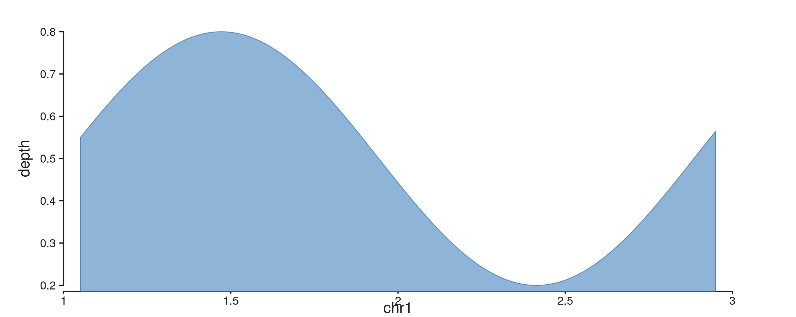
seq_plot() %|%
seq_track(data = cov_gr,
mapping = map(x = depth, y = start),
windows = win) %+%
seq_area(aesthetics = aes(fill = "#4385BE",
color = "#205EA6",
alpha = 0.6, linewidth = 0.7)) -> p
p$plot()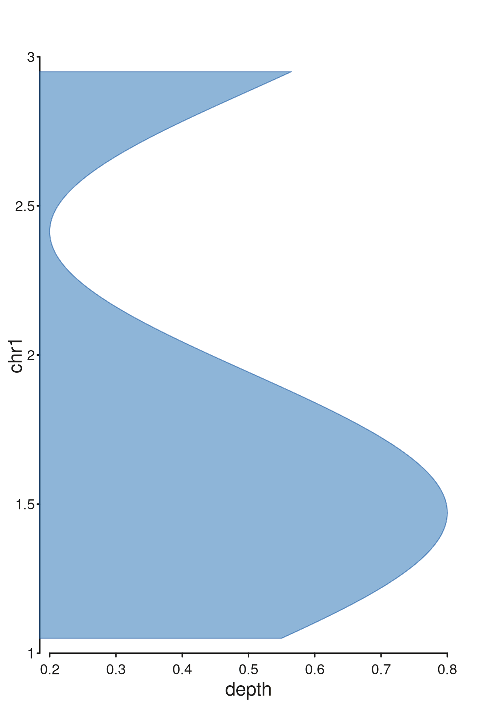
Hi-C-style rotated tiles
Rotated tiles (aes(rotate = TRUE)) place each
observation as a diamond in (genomic_x, genomic_y) space —
the natural representation for Hi-C contacts or any 2D genomic
relationship. Both axes are genomic; pass a
seq_scale_genomic() scale_y built from the
distance-bin GRanges.
n_contacts <- 60
hic_win <- GRanges("chr1", IRanges(1e6, 3e6))
# Toy Hi-C: pick x-bins, then y-bins offset by a genomic distance.
x_starts <- sample(seq(1.05e6, 2.95e6, by = 2e4), n_contacts, replace = TRUE)
y_offset <- sample(seq(2e4, 8e5, by = 2e4), n_contacts, replace = TRUE)
x_gr <- GRanges("chr1", IRanges(start = x_starts, width = 2e4),
score = runif(n_contacts))
y_gr <- GRanges("chr1", IRanges(start = x_starts + y_offset, width = 2e4))
# Map [0,1] scores → a soft red ramp for the fill column.
score_to_color <- function(s) {
pal <- grDevices::colorRampPalette(c("#F4A4C2", "#A02C6D"))(100)
pal[pmin(pmax(round(s * 99) + 1, 1), 100)]
}
x_gr$fill_col <- score_to_color(x_gr$score)
seq_plot() %|%
seq_track(data = x_gr,
mapping = map(x = start, fill = fill_col),
windows = hic_win,
scale_y = seq_scale_genomic(
GRanges("chr1", IRanges(0, max(y_offset) + 2e4)))) %+%
seq_tile(data2 = y_gr, aesthetics = aes(rotate = TRUE)) -> p
p$plot()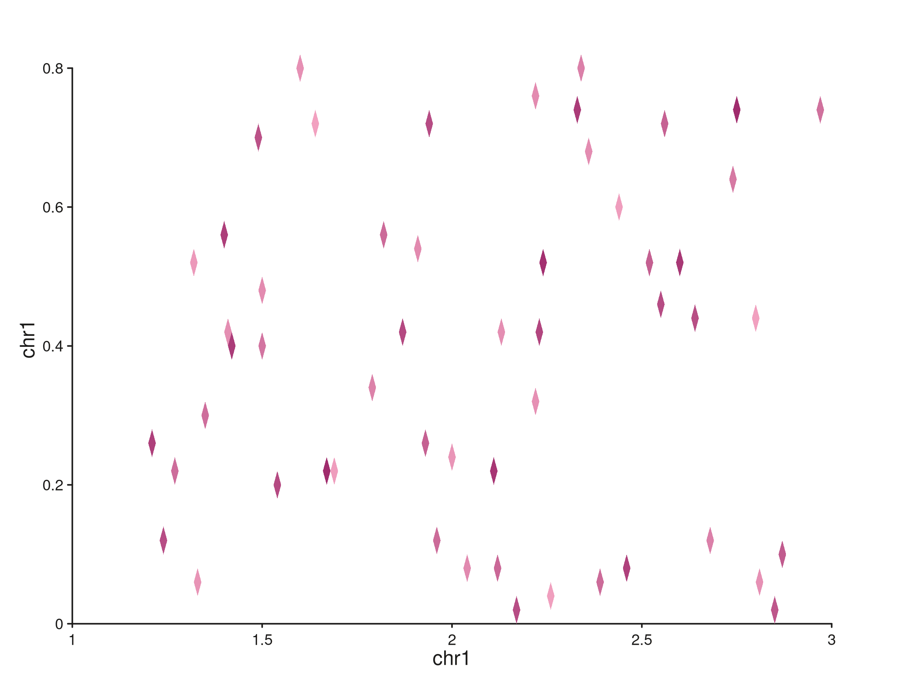
Combining multiple composites
Stack several tracks in one plot to mix composite types. Each track keeps its own data, mapping, and y-scale.
seq_plot() %|%
seq_track(track_id = "Signal",
data = ribbon_gr,
mapping = map(x = start, y_min = lo, y_max = hi),
windows = win) %+%
seq_ribbon(aesthetics = aes(fill = "#4385BE", alpha = 0.5)) %__%
seq_track(track_id = "Bars",
data = bar_gr,
mapping = map(x = start, y = score),
windows = win) %+%
seq_bar(aesthetics = aes(fill = "#8B7EC8")) %__%
seq_track(track_id = "Genes",
data = gene_gr,
mapping = map(group = gene_id,
type = feature,
strand = strand_col,
label = gene_name,
color = color),
windows = win) %+%
seq_gene(map(group = gene_id,
type = feature,
strand = strand_col,
label = gene_name,
color = color)) -> p
p$plot()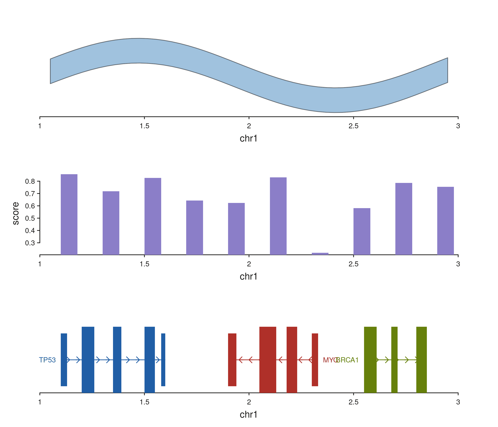
Pre-defined patchwork layouts
Passing a layout string to seq_plot(layout = ...) fixes
each track’s position by track_id. Every letter in the
string names a track and marks the cells it covers; # is a
blank cell. seq_track(direction = ...) is ignored in this
mode — position is driven entirely by the string.
The layout below reserves the top row for a signal ribbon and a
density sidebar, a middle row for bars that spans the whole width, and a
bottom row for gene models. seq_preview_layout() renders
the layout up-front so you can verify the geometry before adding
data.
layout_str <- "
AAAB
CCCC
DDDD
"
seq_preview_layout(layout = layout_str)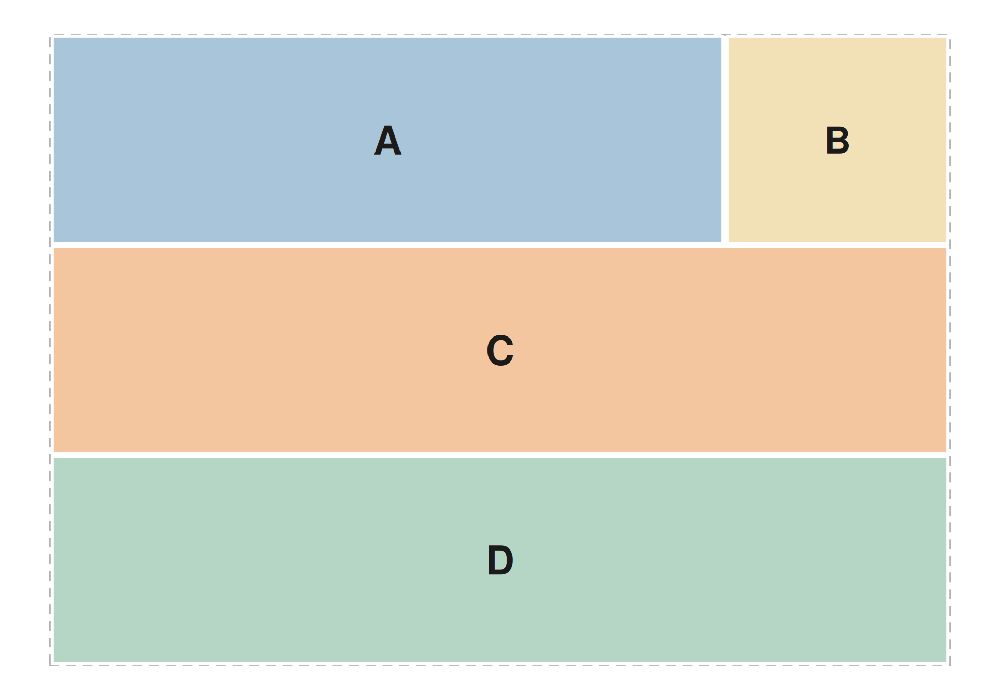
seq_plot(layout = layout_str) %+%
seq_track(track_id = "A",
data = ribbon_gr,
mapping = map(x = start, y_min = lo, y_max = hi),
windows = win) %+%
seq_ribbon(aesthetics = aes(fill = "#4385BE", alpha = 0.5)) %+%
seq_track(track_id = "B",
data = dens_gr,
mapping = map(x = start, y = score),
windows = win) %+%
seq_density(aesthetics = aes(fill = "#879A39", alpha = 0.7)) %+%
seq_track(track_id = "C",
data = bar_gr,
mapping = map(x = start, y = score),
windows = win) %+%
seq_bar(aesthetics = aes(fill = "#8B7EC8")) %+%
seq_track(track_id = "D",
data = gene_gr,
mapping = map(group = gene_id,
type = feature,
strand = strand_col,
label = gene_name,
color = color),
windows = win) %+%
seq_gene(map(group = gene_id,
type = feature,
strand = strand_col,
label = gene_name,
color = color)) -> p
p$plot()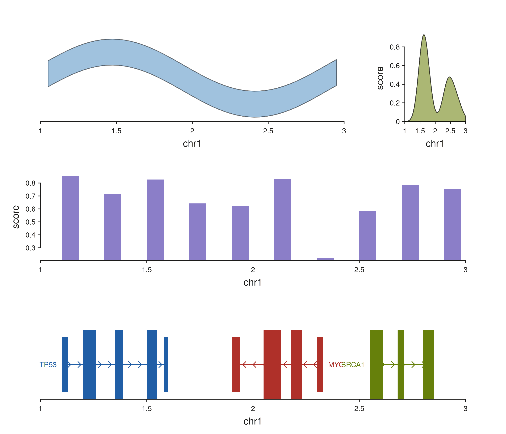
A plot that spans multiple rows
A letter’s region in the layout string is its axis-aligned bounding
box, so any letter whose cells form a contiguous rectangle can span
multiple rows, multiple columns, or both. In the layout below,
B occupies both rows of the right-hand column while
A and C share the left column and
D spans the full width of the third row.
span_layout <- "
AABB
CCBB
DDDD
"
seq_preview_layout(layout = span_layout)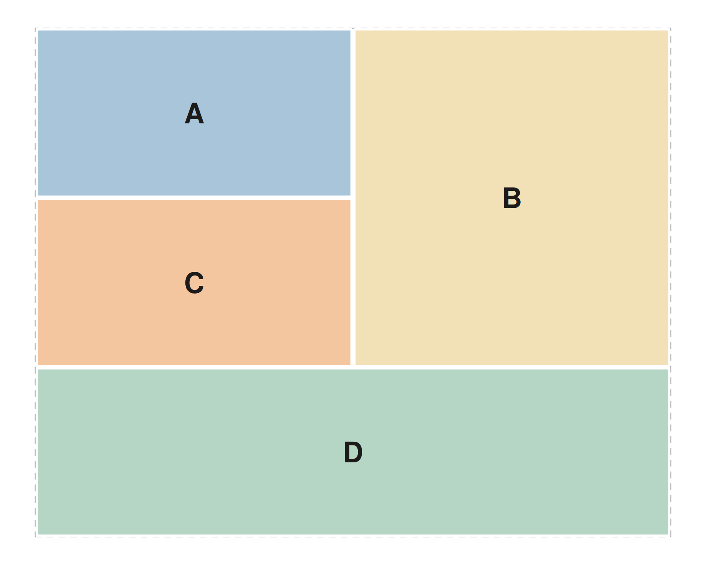
The rendered plot puts a density summary (track B) alongside two
stacked detail tracks (A = ribbon, C = bars), with a genes track beneath
them. Because the density track spans both rows on the right, its
y-extent is the full height of A + C
together.
seq_plot(layout = span_layout) %+%
seq_track(track_id = "A",
data = ribbon_gr,
mapping = map(x = start, y_min = lo, y_max = hi),
windows = win) %+%
seq_ribbon(aesthetics = aes(fill = "#4385BE", alpha = 0.5)) %+%
seq_track(track_id = "B",
data = dens_gr,
mapping = map(x = start, y = score),
windows = win) %+%
seq_density(aesthetics = aes(fill = "#879A39", alpha = 0.7)) %+%
seq_track(track_id = "C",
data = bar_gr,
mapping = map(x = start, y = score),
windows = win) %+%
seq_bar(aesthetics = aes(fill = "#8B7EC8")) %+%
seq_track(track_id = "D",
data = gene_gr,
mapping = map(group = gene_id,
type = feature,
strand = strand_col,
label = gene_name,
color = color),
windows = win) %+%
seq_gene(map(group = gene_id,
type = feature,
strand = strand_col,
label = gene_name,
color = color)) -> p
p$plot()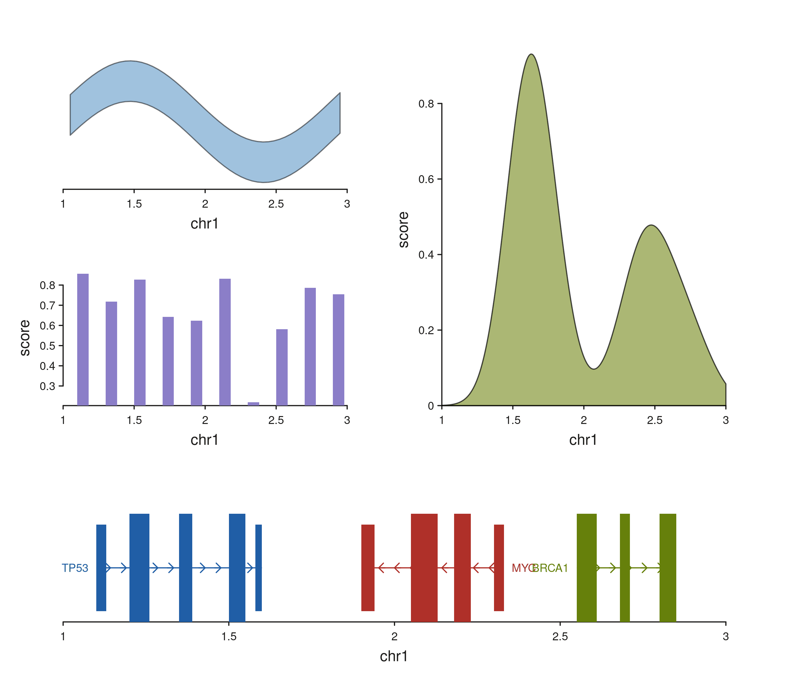
Layout-string rules:
- Every non-
#letter must form a rectangular bounding box (SeqPlotR errors if anL-shape or other non-rectangle is detected). -
#cells render as empty space — no track, no axes. - Tracks whose
track_idis not present in the string are silently skipped, so the same set ofseq_track()calls can be reused across different layout strings.